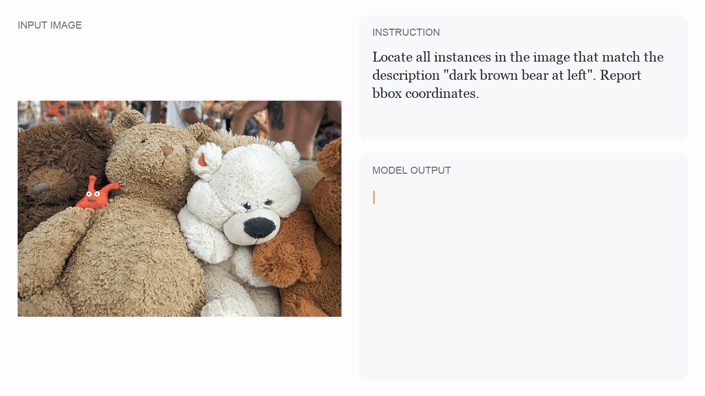
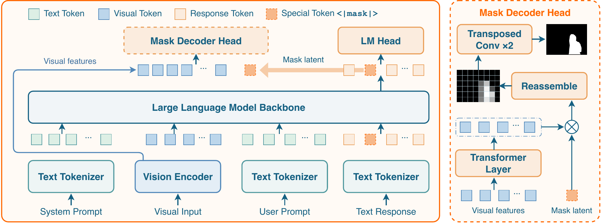
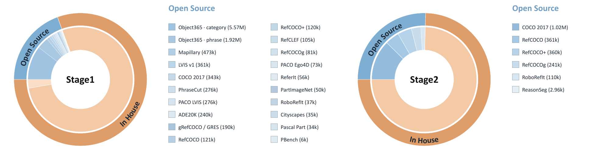
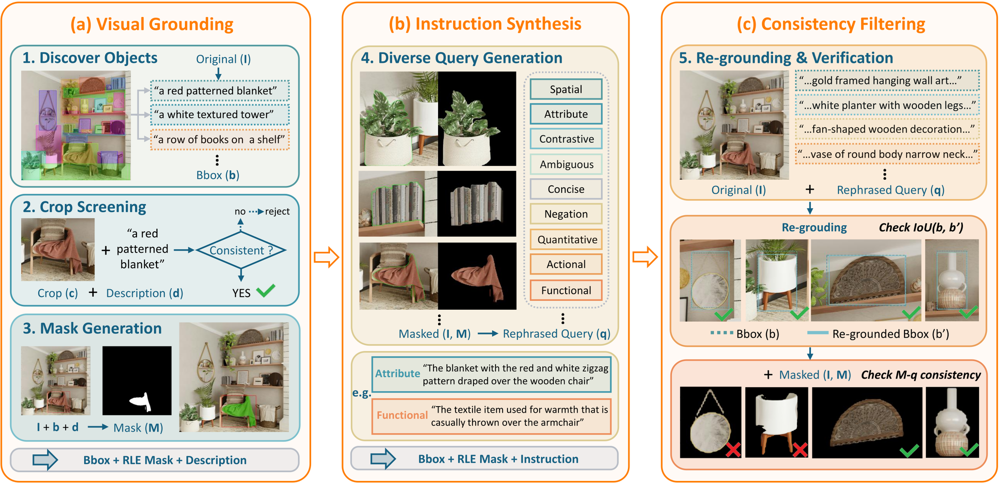
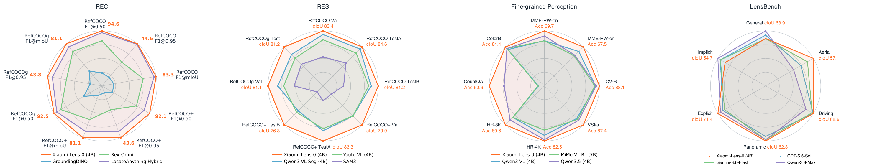

Referring Expression Comprehension
Finds the object a phrase describes and returns its bounding box, from appearance, action, size, or position.
SeerRay Lab / 4B grounding model
Locate. Segment.
Reason.
Pixel-level grounding and visual reasoning, together in a compact 4B multimodal large language model that predicts masks from the same backbone it uses to answer.

01 / Capabilities
Each generated <|mask|> token is decoded into a mask, so the model can point at what it talks about: in a final answer, or in the middle of its reasoning.
Finds the object a phrase describes and returns its bounding box, from appearance, action, size, or position.
Returns a pixel mask for the referred object, decoded from the visual latent of a generated <|mask|> token.
Lists every instance of a category in crowded scenes, each with its own box and mask.
Resolves functional and implicit requests, such as what could package a gift, after a short reasoning trace.
Picks the object a person asks to be handed in cluttered scenes, combining category, appearance, and position.
Thinks with visual latents: grounds each region it refers to while counting or answering high-resolution questions.
02 / Sample playback
Six domains, four recorded cases each. Pick one to replay its output; boxes and masks appear as the corresponding tokens are generated.

“dark brown bear at left”
03 / Method
Xiaomi-Lens-0 extends Qwen3.5-4B with a lightweight mask decoder. Joint language and mask training supervises the shared representation used for both spatial predictions and textual answers.

The language model consumes spatially merged visual tokens. Each generated <|mask|> token queries the encoder's pre-merge features through the mask decoder. Open full size ↗
The contextual state of each <|mask|> token represents a target region given the image, instruction, and preceding response.
The decoder reads a single feature grid from the vision encoder before spatial merging. It needs no separate segmentation encoder or multi-scale fusion.
Patch-wise compatibility scores between the latent and the grid are reassembled and upsampled into a mask.
Mask tokens placed inside the reasoning trace decode to masks for the regions it discusses. Grounded reasoning traces supervise these intermediate regions.
Training recipe
Both stages mix in-house data with public segmentation, referring, and reasoning datasets.
With the MLLM backbone frozen, the decoder learns to read spatial information from fixed pre-merge features.
The backbone is unfrozen and trained jointly with the decoder, so mask supervision updates the shared visual features alongside next-token supervision.

04 / Data & LensBench
We construct referring-expression data and grounded reasoning traces that link intermediate region references to object masks, and introduce LensBench, an open benchmark for segmentation from explicit and implicit instructions.

(a) Candidate objects are localized, their descriptions are checked against image crops, and masks are generated. (b) The masked view and the original image guide referring-instruction synthesis. (c) Re-grounding and contextual verification check that each instruction identifies its target.
(a) After image and region screening, an MLLM generates question–answer pairs with multiple-choice or numeric answers. (b) Rule-based filters remove flawed questions, options are shuffled, and an independent checker verifies the answers.
LensBench contains 1,200 human-reviewed paired units and 4,800 instructions across general, aerial, driving, and panoramic imagery (300 units per domain). Each unit combines single/multiple targets with explicit/implicit wording. The two wordings share the same target mask; multiple targets use the union mask and its enclosing box. Targets and masks are fixed before instruction synthesis, followed by automated consistency checks and human review of each complete unit.
Xiaomi-Lens-0 leads mask cIoU in aerial (57.1), driving (68.6), and panoramic (62.3) imagery, and leads both metrics on explicit instructions. Implicit instructions remain challenging: cIoU drops from 71.4 to 54.7, while box Prec@0.5 drops from 85.0 to 70.0. The gap is largest for multiple targets in panoramic scenes, where cIoU falls from 71.8 to 48.9 and box Prec@0.5 from 81.3 to 48.7.
Marginal results pool single and multiple targets. Each cell reports mask cIoU / box Prec@0.5 (%, higher is better). Bold marks best; underline marks second best.
| Method | Explicit | Implicit | General | Aerial | Driving | Panoramic | ||||||
|---|---|---|---|---|---|---|---|---|---|---|---|---|
| cIoU | Prec@0.5 | cIoU | Prec@0.5 | cIoU | Prec@0.5 | cIoU | Prec@0.5 | cIoU | Prec@0.5 | cIoU | Prec@0.5 | |
| GPT-5.6-Sol | 63.8 | 73.2 | 61.2 | 70.0 | 68.4 | 67.9 | 42.2 | 58.5 | 68.4 | 81.8 | 57.1 | 78.3 |
| Gemini-3.6-Flash | 61.4 | 74.5 | 61.0 | 70.3 | 63.6 | 65.8 | 50.1 | 62.5 | 66.8 | 81.0 | 60.8 | 80.3 |
| MiMo-V2.5 | 51.4 | 52.2 | 47.4 | 46.8 | 54.2 | 45.2 | 32.6 | 38.6 | 50.5 | 52.8 | 45.4 | 61.4 |
| Seed-2.1-Pro | 62.1 | 70.2 | 55.9 | 64.5 | 60.6 | 56.7 | 50.1 | 58.5 | 66.8 | 77.4 | 59.9 | 76.7 |
| Qwen3.8-Max | 67.6 | 69.2 | 64.5 | 63.8 | 74.2 | 79.7 | 33.5 | 62.5 | 58.0 | 57.7 | 60.8 | 66.2 |
| Kimi-K3 | 29.4 | 39.1 | 28.3 | 33.0 | 38.5 | 26.1 | 13.8 | 44.9 | 47.2 | 31.1 | 13.4 | 42.1 |
| GLM-5.3-Flash | 44.3 | 37.5 | 43.5 | 33.3 | 48.9 | 26.3 | 28.0 | 33.4 | 51.6 | 47.5 | 30.6 | 34.4 |
| DeepSeek-V4-Flash-Vision-Exp | 41.8 | 30.7 | 41.1 | 27.3 | 46.1 | 28.1 | 25.9 | 28.9 | 43.9 | 27.9 | 32.8 | 31.0 |
| SAM 3 | 17.3 | 38.1 | 15.4 | 19.5 | 23.8 | 24.8 | 4.3 | 27.3 | 27.7 | 35.1 | 11.1 | 27.9 |
| Xiaomi-Lens-04B | 71.4 | 85.0 | 54.7 | 70.0 | 63.9 | 79.1 | 57.1 | 79.6 | 68.6 | 79.4 | 62.3 | 72.1 |
Single and multiple targets under explicit and implicit instructions across four domains. Click the image for the full-resolution comparison.
05 / Benchmarks
The same six domains, in the same order. Select one to compare the reported scores. All scores are percentages; higher is better.
01 · Referring Expression Comprehension
Ranks first on seven of eight RefCOCO, RefCOCO+, and RefCOCOg splits, 5.6 points above its Qwen3.5-4B backbone on average.
mean Prec@0.5 · 8 splits · top models
Orange marks a best score in the table
Bold marks the best score and underline the second best.
| Method | RefCOCO | RefCOCO+ | RefCOCOg | |||||
|---|---|---|---|---|---|---|---|---|
| Val | TestA | TestB | Val | TestA | TestB | Val | Test | |
| Grounding-DINO-L | 90.6 | 93.2 | 88.2 | 82.8 | 89.0 | 75.9 | 86.1 | 87.0 |
| Florence-2 | 93.4 | 95.3 | 92.0 | 88.3 | 92.9 | 83.6 | 91.2 | 91.7 |
| LISALLaVA-7B | 85.4 | 88.8 | 82.6 | 74.2 | 79.5 | 68.4 | 79.3 | 80.4 |
| GSVAVicuna-7B | 86.3 | 89.2 | 83.8 | 72.8 | 78.8 | 68.0 | 81.6 | 81.8 |
| PixelLMLLaVA-7B | 89.8 | 92.2 | 86.4 | 83.2 | 87.0 | 78.9 | 84.6 | 86.0 |
| VisionLLM v2Vicuna-7B | 87.9 | 91.2 | 84.3 | 77.6 | 83.8 | 70.2 | 82.9 | 84.1 |
| Text4SegInternVL2-8B | 90.3 | 93.4 | 87.5 | 85.2 | 89.9 | 79.5 | 85.4 | 85.4 |
| UFOInternVL2-8B | 91.4 | 93.8 | 88.2 | 85.7 | 90.7 | 79.7 | 86.8 | 87.4 |
| MLLMSegInternVL2.5-4B | 91.6 | 93.3 | 87.6 | 86.0 | 90.0 | 79.8 | 88.3 | 88.6 |
| InternVL-3.54B | 92.5 | 94.3 | 88.2 | 87.6 | 92.3 | 81.6 | 89.6 | 89.3 |
| Qwen2.5-VL3B | 89.1 | 91.7 | 84.0 | 82.4 | 88.0 | 74.1 | 85.2 | 85.7 |
| Qwen3-VL4B | 90.7 | 92.2 | 86.7 | 82.9 | 89.4 | 75.6 | 87.3 | 87.7 |
| Qwen3-VL-Seg4B | 92.7 | 94.6 | 89.8 | 87.8 | 92.1 | 82.2 | 89.1 | 89.0 |
| Qwen3.54B | 90.4 | 92.3 | 87.1 | 84.8 | 88.9 | 79.1 | 88.0 | 88.2 |
| Youtu-VL4B | 93.6 | 95.2 | 90.8 | 90.1 | 93.9 | 85.4 | 92.2 | 92.9 |
| Xiaomi-Lens-04B | 94.6 | 96.2 | 92.3 | 92.1 | 94.9 | 88.5 | 92.5 | 92.4 |
F1@mIoU is the mean F1 over IoU thresholds from 0.50 to 0.95 in steps of 0.05.
| Method | RefCOCO | RefCOCO+ | RefCOCOg | ||||||
|---|---|---|---|---|---|---|---|---|---|
| F1@0.50 | F1@0.95 | F1@mIoU | F1@0.50 | F1@0.95 | F1@mIoU | F1@0.50 | F1@0.95 | F1@mIoU | |
| GroundingDINO | 51.2 | 23.3 | 44.3 | 49.2 | 20.9 | 41.4 | 58.0 | 23.2 | 49.7 |
| Rex-Omni | 84.4 | 32.9 | 71.4 | 76.9 | 29.5 | 64.1 | 84.7 | 34.7 | 72.3 |
| LocateAnything Fast | 92.5 | 44.0 | 80.6 | 84.4 | 39.5 | 73.1 | 88.5 | 40.7 | 76.2 |
| LocateAnything Hybrid | 92.7 | 44.3 | 81.4 | 85.8 | 40.6 | 75.1 | 89.4 | 41.5 | 77.7 |
| LocateAnything Slow NTP | 92.4 | 38.4 | 80.2 | 85.2 | 35.7 | 73.9 | 88.7 | 35.6 | 76.1 |
| Qwen2.5-VL7B | 82.4 | 17.7 | 66.9 | 73.0 | 16.4 | 59.3 | 75.3 | 15.6 | 60.3 |
| Qwen3-VL2B | 88.3 | 26.7 | 72.4 | 81.2 | 24.3 | 66.5 | 85.9 | 25.7 | 69.8 |
| Qwen3-VL4B | 92.1 | 32.8 | 77.6 | 86.8 | 30.9 | 73.4 | 88.8 | 32.3 | 74.7 |
| Qwen3-VL8B | 91.1 | 29.9 | 75.8 | 86.4 | 29.0 | 72.0 | 88.7 | 28.8 | 73.3 |
| Qwen3.54B | 90.1 | 29.1 | 74.5 | 84.1 | 27.8 | 69.5 | 88.4 | 27.0 | 71.6 |
| Qwen3.59B | 92.0 | 35.1 | 78.3 | 87.5 | 33.9 | 74.6 | 89.5 | 33.5 | 75.3 |
| RynnBrain1.1 | 82.6 | 20.9 | 65.8 | 72.5 | 19.2 | 57.5 | 84.3 | 21.5 | 67.6 |
| SenseNova-Vision | 90.1 | 45.1 | 79.7 | 84.4 | 41.7 | 74.3 | 89.2 | 44.7 | 78.7 |
| MiMo-VL-SFT7B | 86.1 | 14.5 | 66.3 | 76.8 | 13.1 | 58.9 | 84.9 | 14.3 | 64.8 |
| MiMo-VL-RL7B | 90.4 | 14.2 | 68.5 | 84.8 | 13.6 | 64.4 | 87.7 | 13.1 | 64.8 |
| BAGEL | 79.4 | 25.1 | 65.2 | 68.3 | 20.5 | 54.5 | 77.7 | 22.2 | 62.3 |
| RynnBrain | 74.0 | 13.6 | 55.6 | 65.5 | 11.7 | 48.9 | 76.5 | 14.3 | 57.9 |
| Xiaomi-Lens-04B | 94.6 | 44.6 | 83.3 | 92.1 | 43.6 | 81.1 | 92.5 | 43.8 | 81.1 |
02 · Referring Expression Segmentation
Leads the compared models on all eight RefCOCO, RefCOCO+, and RefCOCOg splits.
mean cIoU · 8 splits · top models
Orange marks a best score in the table
Bold marks the best score and underline the second best.
| Method | RefCOCO | RefCOCO+ | RefCOCOg | |||||
|---|---|---|---|---|---|---|---|---|
| Val | TestA | TestB | Val | TestA | TestB | Val | Test | |
| LISALLaVA-7B | 74.9 | 79.1 | 72.3 | 65.1 | 70.8 | 58.1 | 67.9 | 70.6 |
| GSVAVicuna-7B | 77.2 | 78.9 | 73.5 | 65.9 | 69.6 | 59.8 | 72.7 | 73.3 |
| PixelLMLLaVA-7B | 73.0 | 76.5 | 68.2 | 66.3 | 71.7 | 58.3 | 69.3 | 70.5 |
| VisionLLM v2Vicuna-7B | 76.6 | 79.3 | 74.3 | 64.5 | 69.8 | 61.5 | 70.7 | 71.2 |
| Text4SegInternVL2-8B | 79.2 | 81.7 | 75.6 | 72.8 | 77.9 | 66.5 | 74.0 | 75.3 |
| UFOInternVL2-8B | 78.0 | 79.7 | 75.6 | 72.3 | 76.8 | 66.6 | 73.7 | 74.3 |
| MLLMSegInternVL2.5-4B | 79.5 | 81.4 | 77.7 | 75.4 | 78.7 | 70.8 | 78.1 | 78.4 |
| SAM 3 | 75.5 | 77.6 | 71.0 | 67.3 | 71.1 | 63.4 | 73.4 | 74.0 |
| UniPixelQwen2.5-VL-3B | 80.5 | 82.6 | 76.9 | 74.3 | 78.9 | 68.4 | 76.3 | 77.0 |
| Youtu-VL4B | 80.7 | 82.0 | 78.4 | 76.2 | 79.6 | 71.4 | 76.5 | 76.6 |
| Qwen3-VL-Seg4B | 82.3 | 83.7 | 79.1 | 76.2 | 80.2 | 70.8 | 78.2 | 78.1 |
| Xiaomi-Lens-04B | 83.4 | 84.6 | 81.2 | 79.9 | 83.3 | 76.3 | 81.1 | 81.2 |
03 · Multi-Instance Grounding
Highest mIoU F1 among the compared models, 0.9 points above GroundingPI.
F1 · mean over IoU 0.50–0.95 · top models
Orange marks a best score in the table
Bold marks the best score and underline the second best.
The mIoU group gives the mean of each metric over IoU thresholds from 0.50 to 0.95 in steps of 0.05.
| Method | IoU 0.50 | IoU 0.95 | mIoU | ||||||
|---|---|---|---|---|---|---|---|---|---|
| Recall | Precision | F1 | Recall | Precision | F1 | Recall | Precision | F1 | |
| GroundingDINO | 79.6 | 83.2 | 81.4 | 24.7 | 28.1 | 26.3 | 61.1 | 63.7 | 60.6 |
| Rex-Omni | 69.9 | 81.0 | 75.0 | 17.9 | 21.7 | 19.7 | 53.9 | 59.4 | 56.3 |
| LocateAnything Fast | 66.2 | 73.3 | 69.6 | 24.7 | 26.9 | 25.8 | 50.9 | 59.3 | 53.1 |
| LocateAnything Hybrid | 74.7 | 80.8 | 77.6 | 26.6 | 28.7 | 27.6 | 52.4 | 65.2 | 59.1 |
| LocateAnything Slow NTP | 75.0 | 81.9 | 78.3 | 25.0 | 27.2 | 26.0 | 54.7 | 65.1 | 59.4 |
| Qwen2.5-VL7B | 57.2 | 62.9 | 59.9 | 12.2 | 13.2 | 12.7 | 44.7 | 49.1 | 46.3 |
| Qwen3-VL2B | 63.5 | 67.1 | 65.3 | 21.8 | 22.6 | 22.2 | 42.6 | 44.9 | 42.5 |
| Qwen3-VL4B | 66.1 | 70.6 | 68.3 | 23.7 | 24.9 | 24.3 | 44.9 | 47.8 | 46.5 |
| Qwen3-VL8B | 65.7 | 69.5 | 67.5 | 23.9 | 25.1 | 24.5 | 44.8 | 47.3 | 46.3 |
| RynnBrain1.1 | 36.5 | 60.5 | 45.5 | 11.6 | 16.5 | 13.6 | 28.7 | 45.3 | 35.2 |
| SenseNova-Vision | 79.1 | 80.5 | 79.8 | 27.2 | 30.2 | 28.6 | 63.1 | 55.4 | 57.5 |
| GroundingPI | 81.4 | 80.9 | 81.2 | 22.9 | 22.8 | 22.8 | 63.2 | 62.8 | 63.0 |
| MiMo-VL-SFT7B | 65.5 | 72.2 | 68.7 | 10.0 | 11.1 | 10.5 | 45.7 | 50.5 | 48.0 |
| MiMo-VL-RL7B | 65.6 | 74.5 | 69.8 | 9.2 | 10.3 | 9.7 | 44.5 | 50.2 | 47.2 |
| BAGEL | 65.6 | 75.2 | 70.1 | 11.0 | 13.0 | 11.9 | 46.3 | 47.2 | 46.0 |
| RynnBrain | 21.3 | 49.9 | 29.8 | 4.9 | 10.9 | 6.7 | 15.5 | 35.4 | 21.5 |
| Xiaomi-Lens-04B | 79.6 | 81.1 | 80.4 | 27.2 | 27.7 | 27.4 | 63.4 | 64.5 | 63.9 |
04 · Reasoning Segmentation
Best on all four ReasonSeg scores, validation and test.
mean of 4 gIoU / cIoU scores · top models
Orange marks a best score in the table
Bold marks the best score and underline the second best.
| Method | ReasonSeg | |||
|---|---|---|---|---|
| Val | Test | |||
| gIoU | cIoU | gIoU | cIoU | |
| LISALLaVA-7B | 52.9 | 54.0 | 47.3 | 48.4 |
| LISA++LLaVA-7B | 64.2 | 68.1 | 57.0 | 59.5 |
| PixelLMLLaVA-7B | 44.7 | 37.4 | 44.0 | 39.7 |
| Sa2VAInternVL2-2B | 59.2 | 60.0 | 56.9 | 55.8 |
| Sa2VAInternVL2-8B | 65.2 | 61.1 | 59.5 | 57.8 |
| X-SAMPhi-3-3.8B | 56.6 | 32.9 | 57.8 | 41.0 |
| InstructSAMQwen3-VL-2B | 62.5 | 65.0 | 61.1 | 61.0 |
| Xiaomi-Lens-04B | 71.2 | 68.5 | 68.0 | 62.5 |
05 · Embodied Referring
Best on all four RoboRefIt scores, on both test splits.
mean of 4 gIoU / cIoU scores · top models
Orange marks a best score in the table
Bold marks the best score and underline the second best.
| Method | RoboRefIt | |||
|---|---|---|---|---|
| TestA | TestB | |||
| gIoU | cIoU | gIoU | cIoU | |
| LISALLaVA-7B | 36.1 | 29.9 | 28.7 | 22.7 |
| LISA++LLaVA-7B | 58.7 | 51.5 | 53.5 | 47.8 |
| PixelLMLLaVA-7B | 45.2 | 38.4 | 38.2 | 31.4 |
| Sa2VAInternVL2-2B | 56.8 | 29.0 | 34.0 | 10.2 |
| Sa2VAInternVL2-8B | 58.7 | 27.9 | 36.1 | 9.0 |
| X-SAMPhi-3-3.8B | 41.2 | 10.3 | 25.1 | 4.0 |
| InstructSAMQwen3-VL-2B | 82.5 | 58.4 | 74.4 | 55.5 |
| Xiaomi-Lens-04B | 87.0 | 88.4 | 81.5 | 81.2 |
06 · Fine-Grained Perception
Improves over its Qwen3.5-4B backbone on all eight benchmarks, including +6.8 points on CountQA.
mean accuracy · 8 benchmarks · top models
Orange marks a best score in the table
Bold marks the best score and underline the second best.
| Method | General Perception | High-Resolution Perception | Counting and Color | |||||
|---|---|---|---|---|---|---|---|---|
| MME-RW-en | MME-RW-cn | CV-B | V* | HR-4K | HR-8K | CountQA | ColorB | |
| Qwen2.5-VL7B | 60.8 | 58.3 | 75.3 | 78.5 | 71.6 | 67.9 | 18.9 | 76.4 |
| MiMo-VL-RL7B | 63.4 | 59.8 | 84.3 | 81.2 | 74.4 | 72.9 | 28.3 | 82.8 |
| Qwen3-VL4B | 63.5 | 63.6 | 85.0 | 80.1 | 78.3 | 72.9 | 28.1 | 81.6 |
| Qwen3-VL8B | 66.0 | 66.7 | 85.4 | 86.4 | 78.9 | 74.6 | 29.0 | 82.8 |
| MiniCPM-V-4.59B | 58.2 | 56.2 | 80.2 | 70.2 | 69.9 | 63.6 | 23.4 | 79.8 |
| Qwen3.54B | 66.5 | 60.3 | 85.4 | 82.2 | 81.5 | 75.6 | 43.8 | 82.7 |
| Xiaomi-Lens-04B | 69.7 | 67.5 | 88.1 | 87.4 | 82.5 | 80.6 | 50.6 | 84.4 |

At a glance, from left to right: box grounding F1, referring segmentation cIoU, fine-grained perception accuracy, and LensBench cIoU.
06 / Citation
If you find Xiaomi-Lens-0 useful, please cite the technical report.
@misc{xiaomilens0,
title = {Xiaomi-Lens-0 Technical Report},
author = {Pei Fu and Yike Liu and Yue Sun and Hanmo Wang and
Xiuwen Xi and Ruoceng Zhang and Shaojie Zhang and Tingwei Huang and
Chao Jiang and Hang Li and Bingrui Liu and Zhenbo Luo and
Heng Qu and Changjian Xu and Ming Xu and Jian Luan},
year = {2026},
eprint = {2610.23279},
archivePrefix = {arXiv},
primaryClass = {cs.CV},
url = {https://arxiv.org/abs/2610.23279}
}